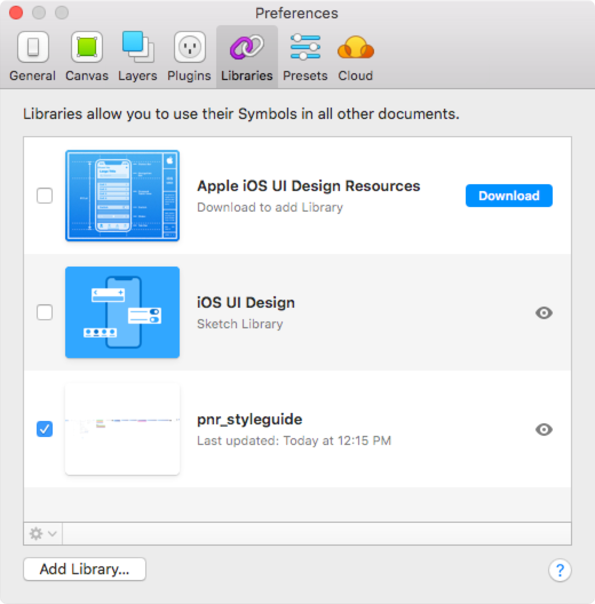
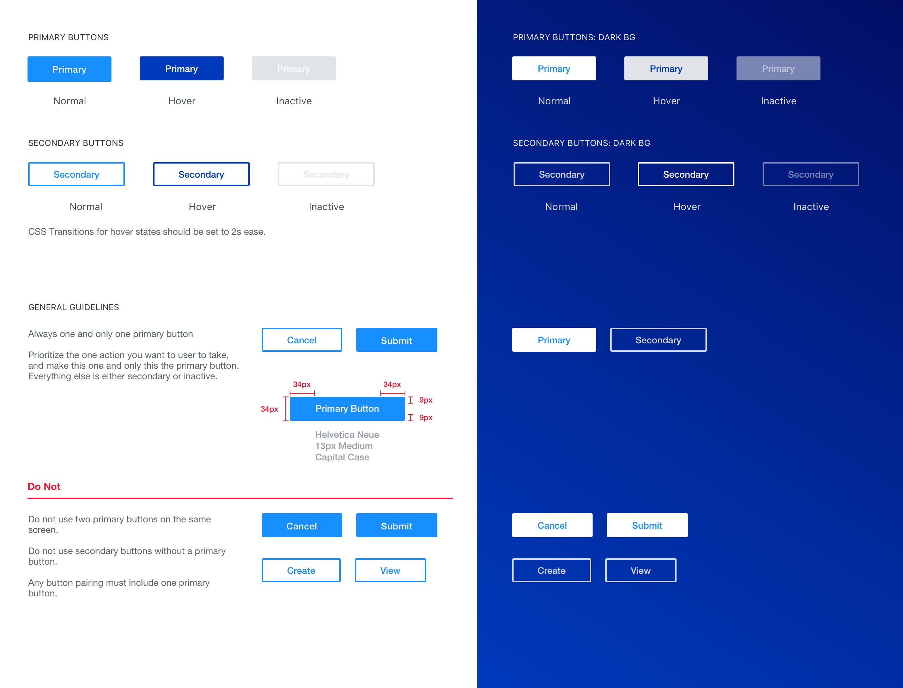
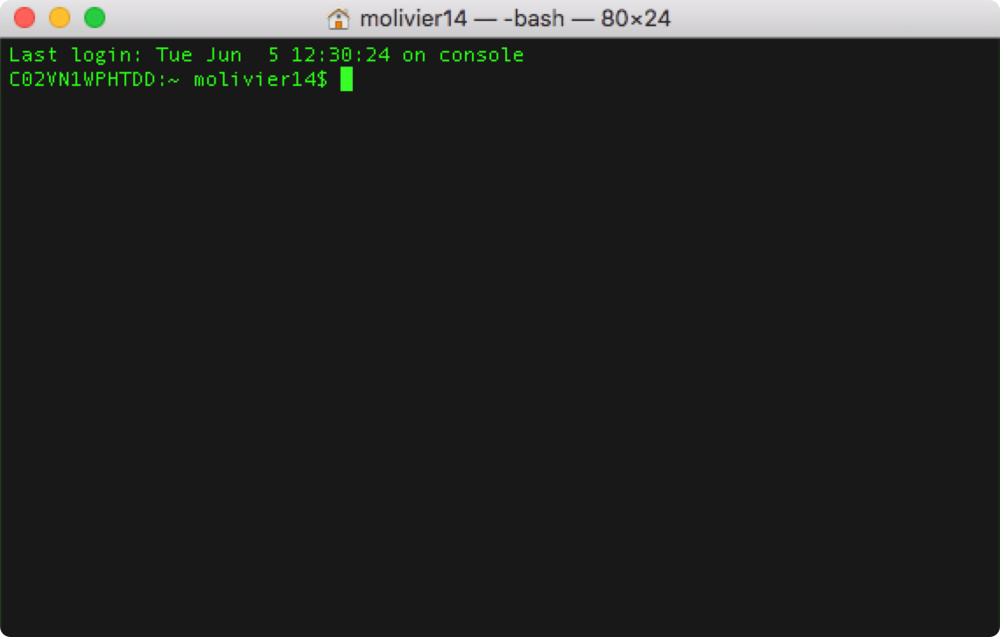
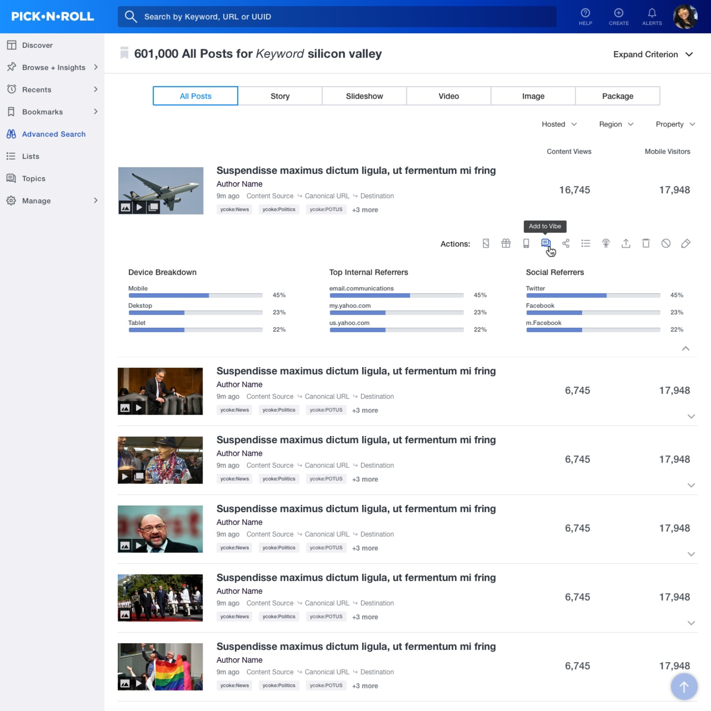

Role: Senior Designer (UI/UX) | When: 2018 | Tools: Sketch/Invision App
During the last merger (Aol + Yahoo) in late 2017, we merged our team with a team of Yahoo engineers who had built up Pick-n-Roll over the years. What was originally meant as a one-stop shop had degenerated into a bloated bit of SaaS and the UI/UX had suffered greatly. Luckily, they had previously brought on a brilliant designer (Aileen B.) who had started to right the ship.
I was lucky enough to get to jump right in with Aileen and help out. We realized quickly that doubling the size of the design team (from 1 to 2) was a huge improvement, but there was a better way to divide and conquer. She had been working on PnR for over a year and had nearly wrapped up the general UI/UX improvements. What we really needed was a centralized library from which to build out future improvements.
During the last merger (Aol + Yahoo) in late 2017, we merged our team with a team of Yahoo engineers who had built up Pick-n-Roll over the years. What was originally meant as a one-stop shop had degenerated into a bloated bit of SaaS and the UI/UX had suffered greatly. Luckily, they had previously brought on a brilliant designer (Aileen B.) who had started to right the ship.
I was lucky enough to get to jump right in with Aileen and help out. We realized quickly that doubling the size of the design team (from 1 to 2) was a huge improvement, but there was a better way to divide and conquer. She had been working on PnR for over a year and had nearly wrapped up the general UX improvements. What we really needed was a centralized library from which to build out future UI improvements.

I started with the latest mocks to ensure that we were using elements that had already gone to development. Quickly, we realized that we needed to standardize a lot of things (button sizes, border-radii, form fields heights, etc.), so I went through as many mocks as possible to determine which were the correct sizes. After several meetings, we determined to base everything on a basis of 12 (36px height for form fields, 24px of padding, etc.). With this as our basis, I recreated all elements and generated new symbols for everything:

One of the first tasks we decided to apply this to was updating the way that tables were displayed in search results and the like. As PNR had been rebuilt on top of itself several times, the code was quite complex, and unnecessarily so. Working in tandem with a front-end developer, I decided to try and clean up the basic table code using our new styleguide as the basis for the UI.

I fired up my local dev environment, got all of the Git repo access issues worked out, and began rewriting years of bloated CSS (in LESS). What should have taken a few days turned into a few weeks as it was clear that ALL of the original CSS needed to be rewritten to better accommodate the layouts.
There were some minor issues (such as being unable to upgrade from Twitter Bootstrap 3.x to 4.x) and setbacks. After a few false starts, I got everything laid out utilizing CSS’s FlexBox and it worked perfectly. A few pushes of code and a merging of branches, and we had our first look at the new design.

Pick-n-Roll is still in development is and currently going through a code base rewrite to React.js. I've contributed some SCSS to the project for a new Advanced Search system using filters (as opposed a query builder).